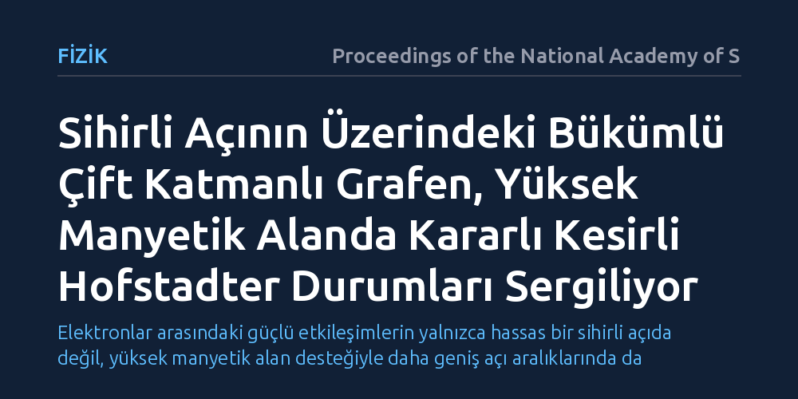

FIZIK · Proceedings of the National Academy of Sciences · 2026-10-17
Araştırmacılar, sihirli açının üzerindeki bükümlü çift katmanlı grafende elektronların yüksek manyetik alan altındaki kolektif davranışlarını inceledi. Ölçümler, etkileşimlerin zayıfladığı varsayılan bu rejimde güçlü manyetik alanın kararlı kesirli Hofstadter kuantum halleri oluşturduğunu ortaya koydu.
Elektronlar arasındaki güçlü etkileşimlerin yalnızca hassas bir sihirli açıda değil, yüksek manyetik alan desteğiyle daha geniş açı aralıklarında da zengin topolojik kuantum halleri oluşturabildiğini gösteriyor.

İki grafen tabakası üst üste konup aralarında yaklaşık 1,1 derecelik çok özel bir açı (sihirli açı) oluşturulduğunda, elektronlar aniden yavaşlar ve aralarındaki itme kuvvetleri baskın hale gelir. Son yıllarda katı hal fiziğinin en ilgi çekici konularından biri olan bu olay, normalde sıradan iletken olan grafeni alışılmadık bir süperiletkene veya topolojik yalıtkana dönüştürür. Ancak bu sihirli açının biraz bile dışına çıkıldığında, elektronların serbestçe akarak birbirleriyle güçlü bağlar kuramadığı ve egzotik kuantum hallerinin kaybolduğu kabul ediliyordu.
Araştırmacıların peşine düştüğü temel soru tam da bu sınırda yatıyordu: Sihirli açının üzerine çıkıldığında, güçlü bir dış manyetik alan uygulayarak elektronları yeniden hizaya sokmak ve gizli kalmış kuantum korelasyonlarını uyandırmak mümkün müdür? Katı cisimlerde elektronlar, kuvvetli manyetik alanlar altında dairesel yörüngelerde hapsedilerek kinetik enerjileri bastırılabilir. Bu çalışma, sihirli açı koşulu sağlanmasa bile, dış manyetik alanın yardımıyla elektron-elektron etkileşimlerinin yeniden baskın kılınıp kılınamayacağını anlamayı amaçladı.
Araştırma ekibi, mikroskobik düzeyde hassas büküm açısına sahip çift katmanlı grafen aygıtları üreterek işe başladı. İki atom kalınlığındaki bu karbon tabakaları, sihirli açının bilerek biraz üzerinde bir açıyla birleştirilerek yapay bir moiré süperörgüsü oluşturuldu. Bu örgü, elektronların hareket ettiği zemine periyodik bir potansiyel dalgası yerleştirerek atomlar arası mesafeden çok daha geniş bir yapay kristal kafesi meydana getirdi.
Hazırlanan nanometre boyutundaki aygıtlar, mutlak sıfıra yakın kriyojenik sıcaklıklara soğutuldu ve laboratuvar ortamında üretilebilen yüksek statik manyetik alanlara maruz bırakıldı. Araştırmacılar, sisteme farklı kapı gerilimleri uygulayarak elektron yoğunluğunu kademeli biçimde değiştirdi ve bu sırada numunenin elektriksel direncini ile Hall iletkenliğini hassas cihazlarla kaydetti.
Elde edilen veriler, sihirli açının üzerindeki açılarda da zengin bir kuantum düzeninin var olduğunu gösterdi. Yüksek manyetik alan altında elektronların serbest kinetik enerjisi bastırıldı ve aralarındaki elektriksel itme kuvveti yeniden sistemin ana belirleyicisi haline geldi. Bunun sonucunda, yalnızca tam sayılarla ifade edilen standart kuantum Hall basamakları değil, kesirli yük taşıyıcılarının oluşturduğu çok sayıda kararlı kuantum durumu gözlemlendi.
Bu durumlar, fizik literatüründe Hofstadter kelebeği olarak bilinen fraktal enerji spektrumunun kesirli kuantum halleriyle genişletilmiş bir biçimine karşılık geliyor. Moiré örgüsünün periyodu ile manyetik alanın belirlediği karakteristik uzunluk birbirine kilitlendiğinde, elektronlar aralarında paylaştıkları kesirli kuantum sayılarıyla yeni bir topolojik faz oluşturdu. Ölçülen iletkenlik basamakları, teorik olarak öngörülen fraktal alt bantların kesirli doluluklarında son derece net direnç düşüşleri sergiledi.
Bu bulgu, iki boyutlu malzemelerde korelasyonlu ve topolojik halleri incelemek için sihirli açıya santimetrenin binde biri hassasiyetinde kilitlenme zorunluluğunu esnetiyor. Bugüne kadar moiré malzemeleri çalışan araştırmacılar, aygıt üretiminde açıyı tam 1,1 derecede tutturabilmek için çok düşük başarı oranlarıyla çalışmak zorundaydı. Yüksek manyetik alanın sunduğu bu esneklik, sihirli açının biraz dışındaki örneklerde de elektron etkileşimlerinin zengin doğasının incelenebileceğini gösteriyor.
Yine de bu sonucun pratik hayata yansıması konusunda ölçülü olmak gerekir. Gözlemlenen kesirli kuantum durumları, yalnızca aşırı düşük sıcaklıklarda ve çok güçlü laboratuvar mıknatısları altında kararlılığını koruyabilmektedir. Dolayısıyla bu çalışma, doğrudan günlük hayata girecek bir elektronik devre vadetmekten ziyade, elektronların karmaşık periyodik ortamlardaki kolektif davranışına dair temel fiziksel kavrayışımızı güçlendirmektedir.